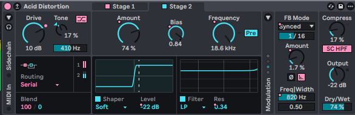
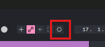

0 patterns
Save Session
Saves all canvas curves, parameters, and template reference.
Saved Sessions
Save Preset
All Saved Presets
Getting Started
Modulate everything in your session — 6 simple steps
One-time setup
1. Click "Install to Ableton" in Stride's titlebar — installs StrideLink + StrideInject.
2. In Ableton: Preferences → Link/Tempo/MIDI → Control Surface → choose StrideInject. Once, and you're set.
1
Load StrideLink on your track
Drop the StrideLink device onto the track with your instrument.

2
Map your parameters
Arm record (F9), nudge each knob you want to modulate, then disarm. Stride pulls them in as lanes — automatically.

3
Generate — one click, every lane
Your mapped params show up as lanes. Hit a generative tool (Chaos, Neuro, Prism, S&H…) — it lays down modulation across every lane at once. Then reshape or Mutate until it feels right.
4
Select your clip
In Ableton, click the MIDI clip you want — make sure it's the one open in the Detail view (double-click it). That's where Stride writes.

5
Inject to Clip
Hit Inject to Clip. Stride writes your curves straight into that clip — no file, no drag.
6
Play & record
Hit play and listen. When it sounds right, record the take.
Want more params? Just map them.
Map more params (arm + record) → they auto-appear in Stride → draw curves → Inject to Clip again. The new params join the modulated chain. No re-setup, no re-scan.

Stuck? Get help.
We've got you.
Watch the full walkthrough video with voiceover, or book a free 30-minute Zoom call and we'll get you rolling. No question is too small.
Curves Detected
You have existing automation curves. A new scan will replace them.
Install to Ableton
One-time setup
Stride needs to drop its Max device (StrideLink) into your Ableton User Library. Afterwards, open Ableton's browser → User Library → Stride → drag StrideLink onto any MIDI track.
Tip: Not sure where your User Library is? In Ableton, right-click User Library in the browser sidebar → Show in Explorer. That's the folder Stride writes to.
Welcome to Stride
Modulate everything in your session.
Stride turns your Ableton racks into modulation playgrounds. Before you dive in — there are two short videos in the Guide folder. Three minutes total. Watching them first will save you hours.
Draw a curve first
Loop
Saved:
Stretch
No lanes yet
Map parameters in Ableton (Quick Arm + Record) — Stride pulls them in automatically, on open and when you switch back.
Heads up: open an automation lane for each parameter in Ableton first — that's what Stride reads.
Ctrl+Wheel · Space+Drag · Alt+Drag
Connecting…